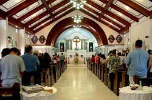
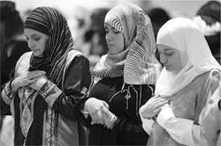

Religious Organizations
Churches
Agape Christian Ministry
Protestant Non-denominational
Pastor Andy Park
412-521-6156
Macedonia Baptist Church
Contact: Rev. Brian Edmonds
Phone: 412-281-8437
Website:
Email: brianjedmonds@yahoo.com
First Baptist Church
Contact: Contact: Rev. Gary Denning
Phone: 412-621-0500
Website:
Synagogues
The Hillel Jewish University Center
4607 Forbes Avenue, Pittsburgh, PA 15213
Benji Berlow
Phone: 412-621-8875 x 111
Macedonia Baptist Church
Contact: Rev. Brian Edmonds
Phone: 412-281-8437
Website:
Email: benjib@hilleljuc.org
Chabad of Monroeville
137 Monticello Dr., Monroeville, 15146
Contact: Rabbi Mendy and Esther Schapiro
Phone: 412-621-0500
Website:
Mosques
The Islamic Center of Pittsburgh
4100 Bigelow Blvd, Pittsburgh, PA 15213
Contact: Imam Atef
Phone: (412) 682 5555
Masjid Al-Awwal
1911 Wylie Avenue, Pittsburgh, PA 15219
Contact: Imam Abu 'Abdil-Fattaah Salaah bin Bernard Brooks
Phone: (412) 434-7979
Buddhist Temples
Pittsburgh Buddhist Center
111, Route 908, Natrona Heights, PA 15065
Phone: 724-295-2525
Email: info@pittsburghbuddhistcenter.org
Zen Center of Pittsburgh
124 Willow Ridge Road - Sewickley, PA 15143
Phone: 412-741-1262
Email: kyoki@prairiewindzen.org
Mandirs/Devesthanams
Pittsburgh Buddhist Center
111, Route 908, Natrona Heights, PA 15065
Phone: 724-295-2525
Email: info@pittsburghbuddhistcenter.org
Sri Shirdi Sai Baba Temple
1451 Abers Creek Road, Monroeville, PA 15146
Phone: 412 374 9244
Email: pittsburghbabatemple@yahoo.com